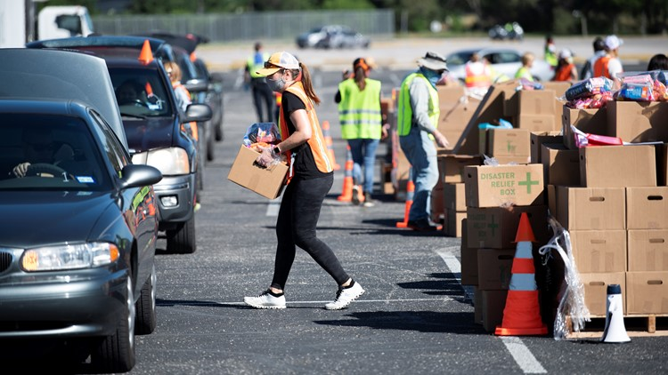

GETTING RESOURCES TO THOSE
IN NEED
Request what you need in these times of crisis.
Request what you need in these times of crisis.
Our program allows for individuals in communities that are in great times of need to request essential items for their household. Their request becomes part of an aggregrate for their zipcode, and emergency services are able to know what and how much each zipcoe requires. Emergency services like FEMA can then drop off the items in the communities, and members of the community can check when and where the drop will take place in our zipcode page.
